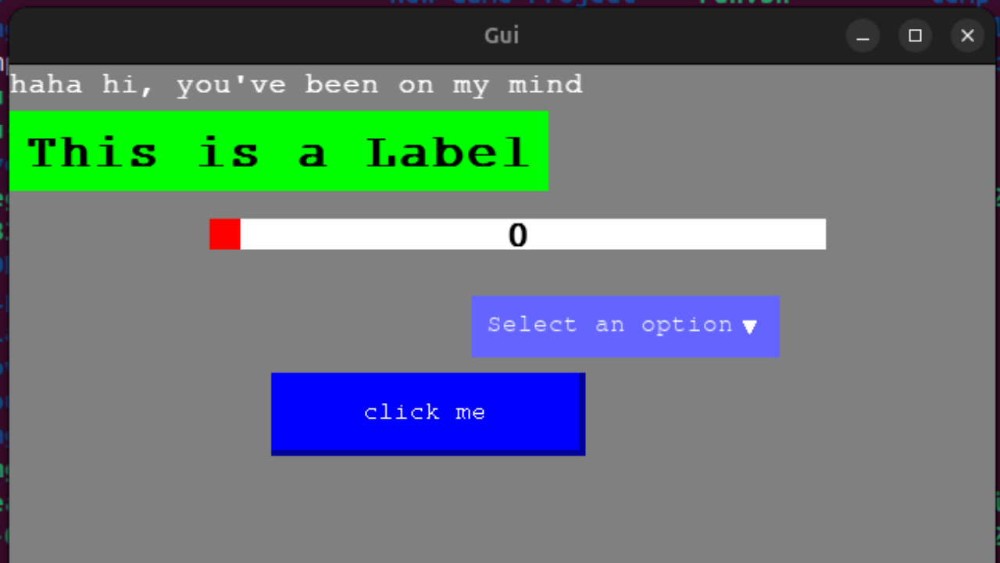

About Me
Hello! I am Nzeogwu Okuchukwu, a Software Engineer focused on systems programming, computer graphics, and game development. Currently, I'm a 3rd-year Computer Science student at Delta State University, Abraka. I love building desktop applications with C++.
Skills
- C, C++
- Python, C#
- Linux
- Godot Engine
Contact Information
Email: gpu.governor@gmail.com
Resume: Download Resume
GitHub: github.com/gpu-governor
LinkedIn: LinkedIn Profile
X.com: X.com Profile
YouTube: YouTube Channel
Programming Projects
Sweet Gui
A Graphical User Interface library called Sweet, built in C and Simple Direct-Media Layer (SDL2).
- Retained mode: Single GUI loop, rendering is only done when needed for optimal performance.
- Lightweight: Around 1500 lines of C99 code.
- Basic widgets: Sliders, Labels, Text, Buttons (more in development).
- Cross-platform: Make-based, with Windows and Linux support.
Source: GitHub Repository
Computer Graphics and Game Development in SDL
Developed mini projects like Snake Game while learning SDL2, along with some simulations.
Source: GitHub Repository

Python GUI Development in Tkinter
Developed desktop apps with Tkinter and Python, including a standout project called "Go" - a GUI ToDo list app built for the August 2024 Backdrop Build Code Jam.
- CRUD: Tasks saved to a .dat file and can be loaded after the app is closed.
- Random Quote Generator.
- Scaling supported.
Source: GitHub Repository

Database System
A simple database system that writes data to .txt files, written in C.
Source: GitHub Repository
Shell Scripting Projects
Created shell scripts such as:
- Alarm Clock: A simple shell-based alarm clock.
- System Information Display: A shell script to show system info.
Source: GitHub Repository